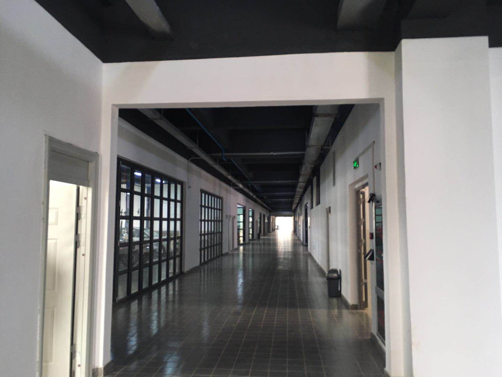

新闻网消息（文、图/新校区建设办 俞罗明）2019年6月28日上午，在代建方柳州市东城投资开发集团有限公司的主持下，对我校官塘校区教学楼4#项目进行了竣工验收并顺利通过。
教学楼4#项目位于教学楼3#的北面，总建筑面积49000平方米，地上五层,地下一层,总投资约10000万元。项目于2017年11月开工建设，主要功能为实训室、理论教室、办公室和可容纳300人的报告厅及地下汽车停车位88个。
由于该项目地形地质复杂，有多个水塘和溶洞，基础方案几经修改，南楼部分根据实际需要调整增设了地下车库，为满足学校的使用要求，代建方柳州市东城投资开发集团有限公司积极协调各参建方，在保证质量的前提下紧抓工程进度，
现顺利建成通过竣工验收交付使用。
教学楼4#竣工验收会现b场
教学楼4#外观
教学楼4#南楼内景

教学楼4#北楼内景